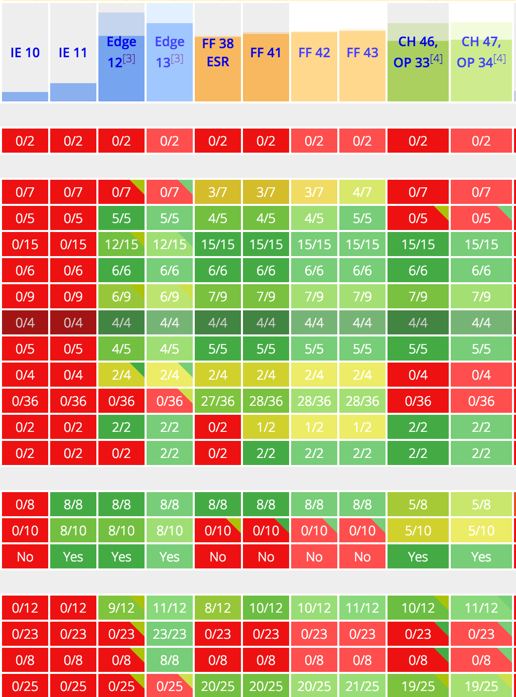
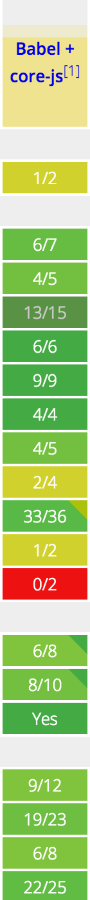

pdw
//ES6
const version = 1.0;
version = 1.5
//syntaxError 'version' is read-only
var version = 1.5;
//syntaxError ‘Duplicate declaration 'version'
//ES5
{
var version = 1.8;
console.log( version ); //1.8
}
console.log( version ); //1.8
console.log( tmp );
//ES6
{
let version = 1.8;
console.log( version ); //1.8
}
console.log( version );
//version is not defined
//ES5
function sum( a, b ){
b = b || 30;
return a + b;
}
sum( 20 ); //50
//ES6
function sum( a, b = 30 ){
return a + b;
}
sum( 20 ); //50
//ES6
function sum( a, b, ...nums ){
let sumAll = a + b;
for( let i = 0, len = nums.length; i < len; i++){
sumAll += nums[ i ];
};
return sumAll;
}
sum( 5, 10, 15, 20, 25 ); //75
//ES6
import util from 'js/external.js';
console.log( util.multi( 4, 5 ) );
//js/external.js
export function multi( x, y ){
return x * y;
};
//ES6
let name = 'Bob';
let time = 'today';
//Backtick
let string = `Hello ${name}, how are you ${time}`;
//Hello Bob, how are you today
//ES5
function User(name){
this._name = name;
}
User.prototype = Object.create(null,{
constructor: {
value: User
},
say: {
value: function() {
return 'name: ' + this._name;
}
}
});
var user = new User('Alice');
console.log(user.say());
//ES6
class User {
constructor(name) {
this._name = name;
}
say() {
return 'name: ' + this._name;
}
}
var user = new User('Alice');
console.log(user.say());
//ES5
function Admin(name) {
User.apply(this, arguments);
}
Admin.prototype = Object.create(User.prototype, {
constructor: {
value: Admin
},
say: {
value: function() {
var superClassPrototype = Object.getPrototypeOf(this.constructor.prototype);
return 'name: ' + superClassPrototype.say.call(this);
}
}
});
//ES6
class Admin extends User {
say() {
return 'name: ' + super.say();
}
}
//ES5
function sum( a, b ){
return a + b;
};
sum( 10, 20 );
//ES6
var sum = ( a, b ) => a + b;
sum( 10, 20 );
//ES5
var count ={
count: 0,
addEvent: function(){
var $node = $( 'a' ).get( 0 );
$node.on('click', function(evt){
this.count++;
}.bind(this));
}
}
//ES6
var count ={
count: 0,
addEvent: function(){
var $node = $( 'a' ).get( 0 );
$node.on('click', ( evt ) => {
this.count++;
});
}
}
//ES5
var arr = [ 1, 2, 3, 4, 5, 6 ];
//첫번째 방법
for( var i = 0, len = arr.length; len > i; i++){
console.log (x);
}
//두번째 방법
arr.forEach(function( x ){
console.log (x);
});
//세번째 방법
for( var x in arr ){
console.log (arr[ x ]);
}
//ES6
var arr = [ 1, 2, 3, 4, 5, 6 ];
for( let x of arr ){
console.log (x);
}
//ES6
function* gen() {
yield '1번';
yield '2번';
yield '3번';
yield '4번';
}
let myGen = gen();
myGen.next(); //{value: '1번', done: false}
myGen.next(); //{value: '2번', done: false}
myGen.next(); //{value: '3번', done: false}
myGen.next(); //{value: '4번', done: false}
myGen.next(); //{value: undefined, done: true}
//ES6
function* gen() {
for (var i = 1; i < 10; i++) {
yield i * 2;
}
}
var myGen = gen();
myGen.next(); //{value: 2, done: false}
myGen.next(); //{value: 4, done: false}
//ES6
let [ a, b, c ] = [ 1, 2, 3 ];
console.log( a + b + c); //6
//ES6
var map = new Map();
map.set( 'myKey', 'abcde' );
map.size; //1
map.get( 'myKey' ); //abcde
sayings.has( 'myKey' ); //true
sayings.delete( 'myKey' );
//ES6
var mySet = new Set();
mySet.add( 1 );
mySet.add( 'hello' );
mySet.has( 'hello' ); //true
mySet.size; //1
mySet2 = new Set( [1, 2, 3, 4] );
//ES6
let [ a, b, c ] = [ 1, 2, 3 ];
console.log( a + b + c); //6
//ES6
var nums1 = [ 30, 40 ];
var nums2 = [ 10, 20, ...nums1, 50, 60 ];
console.log( nums2 ) //[ 10, 20, 30, 40, 50, 60 ];
var nums3 = [ 5, 10 ];
var nums4 = [ 30, 40 ];
nums3.push( ...nums4 );
console.log( nums3 ) //[ 5, 10, 30, 40 ];
//ES6
var mySymbol = Symbol();
var yourSymbol = Symbol();
let myObj = {};
myObj[mySymbol] = 'unique';
myObj[yourSymbol] = 'unique2';
console.log( mySymbol === yourSymbol ); //false;
console.log( myObj[mySymbol] ); //unique;
console.log( myObj[yourSymbol] ); //unique2;
//ES6

* Array comprehensions
* Arrow functions
* Async functions
* Async generator funcitons
* Classes
* Class properties
* Computed property names
* Constants
* Decorators
* Default parameters
* Destructuring
* Exponentiation operator
* For-of
* Function bind
* Generators
* Generator comprehensions
* Let scoping
* Modules
* Module export extensions
* Object rest/spread
* Property method assignment
* Property name shorthand
* Rest parameters
* React
* spread
* Template literals
* Type annotations
* Unicode regex
$ npm install --global babel
$ babel Polygon.js --out-file Polygon.compiled.js
//Polygon.js
class Polygon {
constructor(height, width) {
this.height = height;
this.width = width;
}
get area() {
return this.calcArea()
}
calcArea() {
return this.height * this.width;
}
}
var polygon = new Polygon( 30, 40 );
console.log( polygon.calcArea() );
//Polygon.compiled.js
var _createClass = (function () { function defineProperties(target, props) { for (var i = 0; i < props.length; i++) { var descriptor = props[i]; descriptor.enumerable = descriptor.enumerable || false; descriptor.configurable = true; if ('value' in descriptor) descriptor.writable = true; Object.defineProperty(target, descriptor.key, descriptor); } } return function (Constructor, protoProps, staticProps) { if (protoProps) defineProperties(Constructor.prototype, protoProps); if (staticProps) defineProperties(Constructor, staticProps); return Constructor; }; })();
function _classCallCheck(instance, Constructor) { if (!(instance instanceof Constructor)) { throw new TypeError('Cannot call a class as a function'); } }
var Polygon = (function () {
function Polygon(height, width) {
_classCallCheck(this, Polygon);
this.height = height;
this.width = width;
}
_createClass(Polygon, [{
key: 'calcArea',
value: function calcArea() {
return this.height * this.width;
}
}, {
key: 'area',
get: function get() {
return this.calcArea();
}
}]);
return Polygon;
})();
$ babel arrowFunction.js --out-file arrowFunction.compiled.js
//arrowFunction.js
var sum = ( a, b ) => a + b;
console.log( sum( 60, 20 ) );
//arrowFunction.compiled.js
var sum = function sum(a, b) {
return a + b;
};
console.log(sum(60, 20));
$ babel listMatching.js --out-file listMatching.compiled.js
//listMatching.js
let [ a, b, c ] = [ 1, 2, 3 ];
console.log( a + b + c); //6
//listMatching.compiled.js
var a = 1;
var b = 2;
var c = 3;
console.log(a + b + c); //6
$ babel listMatching.js --out-file listMatching.compiled.js
//import.js
import util from 'js/external.js';
console.log( util.multi( 4, 5 ) );
//import.compiled.js
function _interopRequireDefault(obj) {
return obj && obj.__esModule ? obj : { 'default': obj };
}
var _jsExternalJs = require('js/external.js');
var _jsExternalJs2 = _interopRequireDefault(_jsExternalJs);
console.log(_jsExternalJs2['default'].multi(4, 5));
$ babel ./src --out-file compiled.js
$ babel ./src/js/ --watch compiled.js

require("babel/polyfill");
// dependencies can be written in CommonJs
var commonjs = require("./commonjs");
// or in AMD
define(["amd-module", "../file"], function(amdModule, file) {
...
}
$ npm install webpack -g
//webpack.config.js
var webpack = require( 'webpack' );
module.exports = {
context: __dirname + '/src',
entry: {
javascript: './js/main.js'
},
output: {
filename: 'app.js',
path: __dirname + '/src/dist',
},
plugins: [new webpack.optimize.UglifyJsPlugin()],
module: {
loaders: [{test: /\.js/, loaders: ['babel-loader']}]
}
}
$ webpack
// dependencies can be written in CommonJs
var $ = require( 'jquery' );
var util = require( 'util' );
var User = require( 'User' );
$( 'a' ).on( 'click', ( evt ) =>{
var user = new User();
user.setId( util.UUID() );
});
$ browserify main.js -o bundle.js
$ npm install --global gulp
//gulpfile.js
var gulp = require('gulp');
var browserify = require('browserify');
var babelify = require('babelify');
var source = require('vinyl-source-stream');
var buffer = require('vinyl-buffer');
var uglify = require('gulp-uglify');
gulp.task('build', function () {
browserify({
entries: './src/js/class.js',
debug: false
})
.transform( babelify )
.bundle()
.pipe(source( 'app.js' ))
.pipe(buffer())
.pipe(uglify())
.pipe(gulp.dest('./src/dist/'))
});
gulp.task('watch', ['build'], function() {
gulp.watch(['./src/js/*.js' ],['build'] );
gulp.watch(['./views/**/*.ejs' ], ['build'] );
});
gulp.task('default', ['watch']);
$ gulp
//gulpfile.js
var gulp = require('gulp');
var gutil = require('gulp-util');
var webpack = require('webpack');
gulp.task('webpack', function() {
webpack({
context: __dirname + '/src',
entry: {
javascript: './js/class.js'
},
output: {
filename: 'app.js',
path: __dirname + '/src/dist',
},
plugins: [new webpack.optimize.UglifyJsPlugin()],
module: {
loaders: [{test: /\.js/, loaders: ['babel-loader']}]
}
}, function(err, stats) {
if(err) throw new gutil.PluginError('webpack', err);
});
});
gulp.task('default', ['webpack']);
$ gulp